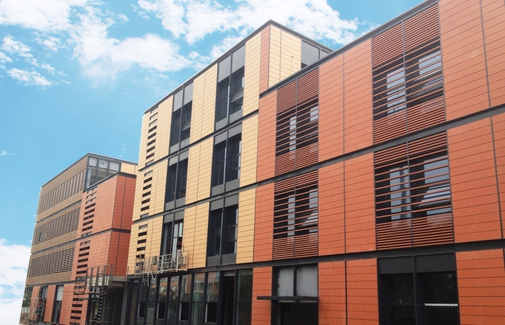
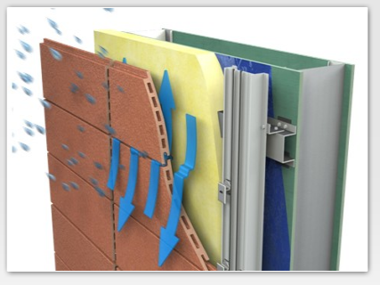

陶土板幕墙系统
通风雨幕系统的原理
通风雨幕技术是用于建筑防雨渗透的一种设计理论，是相对于传统封闭防水幕墙而言的一种开放式的幕墙形式，陶板之间采用开放式接缝，阻挡雨水的同时提供有效的空气流通，带走陶板内部的潮湿水汽。理论上讲，雨水渗透到墙体的三个必要条件：雨水的存在、缝隙的存在、促使雨水向室内渗透的动力。其中雨水和缝隙的存在无法避免，即使使用硅胶将接缝封闭，也会因硅胶的质量、施工质量等原因在室外恶劣的环境中无法避免地存在缝隙。雨幕原理就是通过消除第三条必要条件而避免雨水向室内渗透。板块接缝的开口采用挡水设计，阻挡雨水进入的同时保证了陶板内外表面压力的平衡。陶板背部的通风腔能够有效地带走内部潮湿的空气，保护背后的支撑和保温系统。

通风雨幕系统的优点
节点干燥：
陶板幕墙系统能有效的阻止与水进入陶板背后的空腔。
易于维护：
常用的水泥砂浆、硅胶密封剂和橡胶密封条都容易在暴晒，雨淋之后出现失效并污染幕墙表面。 而采用通风雨幕原理的陶板可以使建筑免受恶劣天气的损害，保持板面的清洁。同时陶板采用可拆卸设计，每块陶板都可独立更换。
节能减排：
保温层位于陶板的背面，中间设置通风腔，水会随着空气的运动不断蒸发。等压空腔中的空气流动不但能干燥雨水，还能够为建筑起到降温的效果，从而降低空调系统负荷。
陶土板的特点

外形新颖多样
(1) 陶土颜色丰富多样，颜色选择的种类多，并且高温烧制的陶板，永不褪色。
(2) 陶板很容易和玻璃、石材、金属和木材搭配使用，保持外墙立面的协调。
(3) 传统与现代相结合，保持了传统风格，又表现出现代的时尚设计。
(4) 陶板先进的制作工艺，能最大地满足幕墙收边、收口的局部设计需要。
(5) 陶板先进的控制技术，表面平整，尺寸稳定，保持幕墙立面的美感。
结构简单，技术先进
(1) 陶板安装固定简单，施工方便。由于其重量轻。
(2) 陶板尺寸稳定，几乎不受外界温度变化的影响。
(3) 陶板维护方便，材料经久耐用。用水即可完成幕墙的洗洁。
(4) 陶板是一种很好的绝热和阻燃材料。
(5) 陶板良好的抗霜冻、抗冲击能力。
(6) 破损的板块很容易更换。
陶土板的组成和性质
陶板（陶土板）的原材料为天然陶土，并添加少量其它矿石材料，通过挤压成形并在1200℃以上高温煅烧制成。
陶板品质优秀，拥有极好的抗冲击性、抗冻性、耐久性、牢固性和安全性等特性。陶板颜色全部为天然陶土本色，色泽均匀，自然，持久耐用。
陶板应用范围比较广泛，既能作为外墙幕墙材料，也可在室内使用，搭配保温材料，还具有良好的保温功能，而且在陶板破损后单片更换也很容易。陶板所具有的特性给幕墙带来新的生命力，与传统幕墙材料相比，陶板幕墙是一种新的装饰幕墙材料。
技术参数
| 性能参数 | 陶板 | ||
| F18白色（宽306 mm） | F18灰色（宽306 mm） | F30黄色（宽310 mm） | |
| 吸水率 | 1.1% | 1.4% | 2.34% |
| 干燥重量 | 31Kg/m² | 31Kg/m² | 41Kg/m² |
| 抗冻性 | 100次循环冻融后无裂 | 100次循环冻融后无裂 | 100次循环冻融后无裂 |
| 破坏强度 | 4966N | 4779N | 8722N |
| 断裂模数 | 平均值：97MPa 最少值：86MPa | 平均值：59.36MPa 最少值≥50MPa | 平均值：92.43MPa 最少值≥80MPa |
| 泊松比 | 0.16 | 0.16 | 0.16 |
| 弹性模量 | 44GPa | 34GPa | 34Gpa |
| 防火性能 | A1级 | A1级 | A1级 |
| 耐酸碱性 | ULA级 | ULA级 | ULA级 |
| 放射性 | A类装修材料 | A类装修材料 | A类装修材料 |
| 抗震性 | 超过10度设防 | 超过10度设防 | 超过10度设防 |
| 模拟风压实验 | 达到11KPa无破坏 | 达到11KPa无破坏 | 达到11KPa无破坏 |
| 隔声性能 | 减少噪音9dB以上 | 减少噪音9dB以上 | 减少噪音9dB以上 |
| 导热系数 | 0.31w/m.k | 0.31w/m.k | 0.41w/m.k |
| 抗热震性 | 50次循环无炸裂及裂纹 | 50次循环无炸裂及裂纹 | 50次循环无炸裂及裂纹 |
| 耐污染性 | 2级 | 2级 | 2级 |
| 抗冲击性 | 0.78 | 0.78 | 0.78 |
| 线性热膨胀系数 | 5.2×10⁻⁶℃⁻¹ | 5.6×10⁻⁶℃⁻¹ | 5.6×10⁻⁶℃⁻¹ |